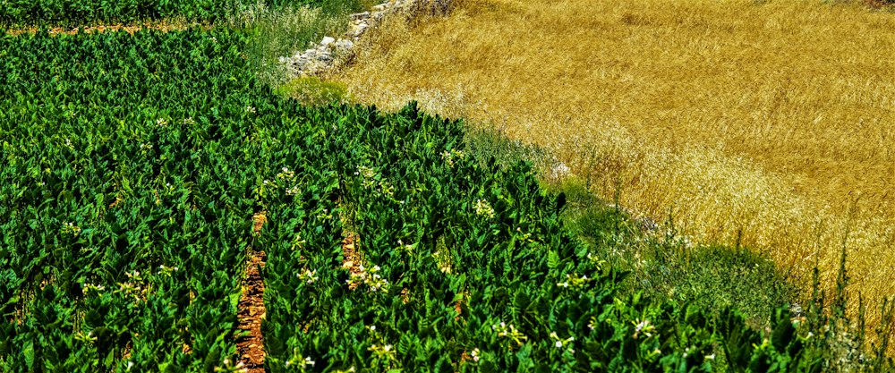
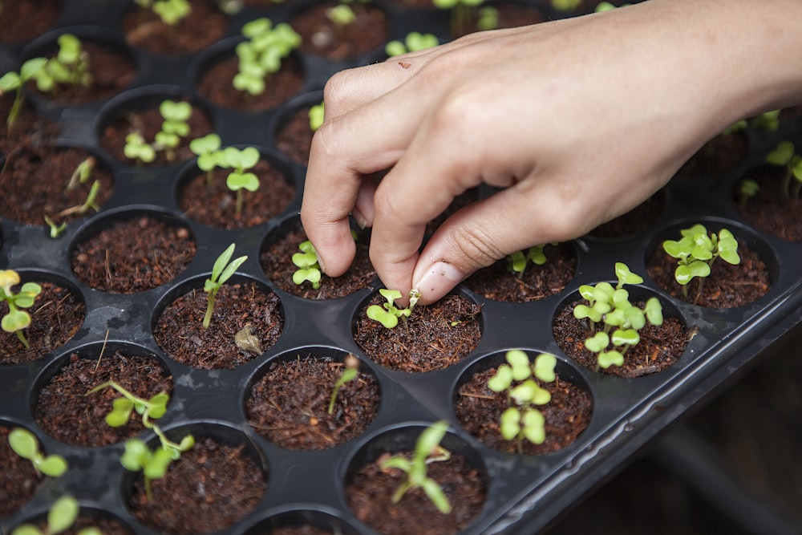
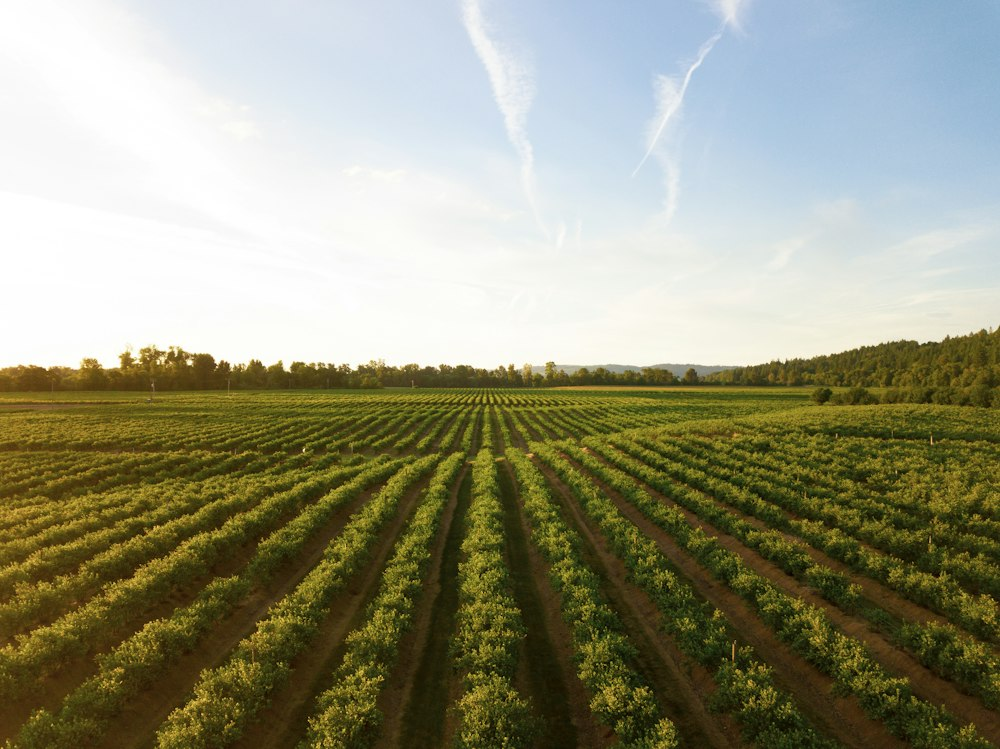
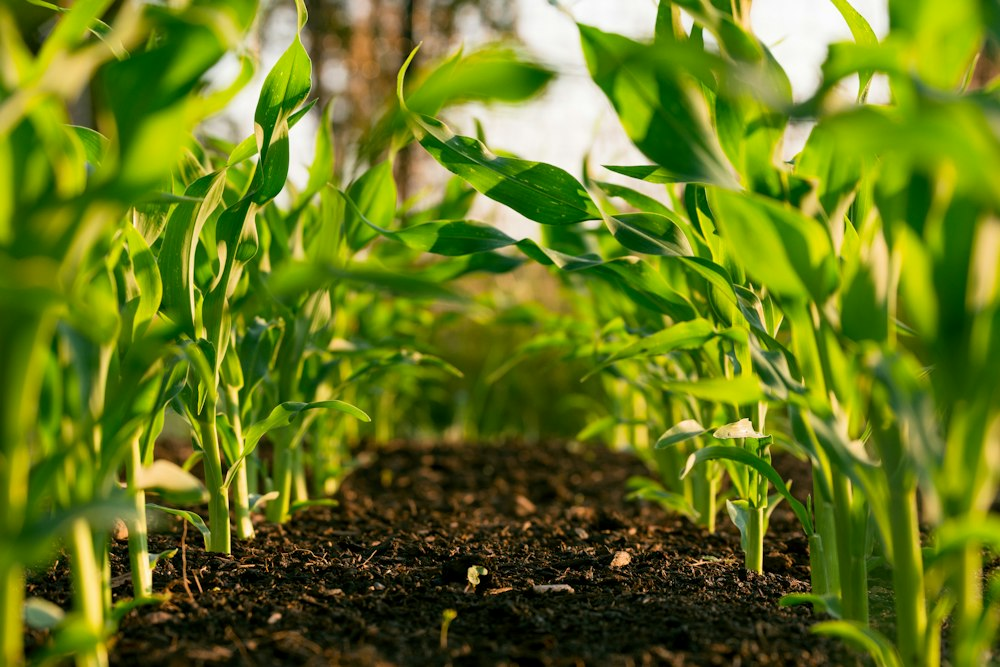

Kilimonet Service Portfolio
Services
From planning to market access, we support every stage of farming.

Consultancy & Planning
- Agricultural consultancy and advisory services
- Farm feasibility studies and business planning
- Crop and livestock production advisory
- Contract farming services
- Market linkage and agribusiness development

Design & Engineering
- Farm planning, design, and development
- Greenhouse design, supply, and installation
- Smart and solar-powered irrigation solutions
- Hydroponic, aquaponic, and vertical farming systems

Digital & Precision Agriculture
- Precision agriculture technologies
- Farm automation and Internet of Things (IoT) solutions
- CCTV and remote farm monitoring systems
- Drone mapping, crop monitoring, and aerial assessments

Field Services & Capacity Building
- Soil sampling and laboratory analysis
- Seedling propagation and nursery establishment
- Agricultural training and capacity building
Transparent Engagement: Any service outside an approved proposal, quotation, work plan, or bill of quantities is treated as a separate, mutually agreed variation — keeping every engagement predictable, transparent, and aligned with client objectives from the outset.
Comprehensive Framework
The Kilimonet Integrated Agrisystems Ecosystem (KIAE)
Building the future of agriculture through one connected platform. KIAE connects every stage of the agricultural value chain into one coordinated system to reduce inefficiencies, improve decision-making, strengthen climate resilience, and create long-term value.
1
Farm Design & Development
Translating an idea, a piece of land, or a business plan into a functional, efficient, and buildable agricultural design.
Services
- Farm master planning & land suitability
- Soil sampling & fertility analysis
- Farm surveying & topographic mapping
- Irrigation & greenhouse design
- Water resource & renewable energy integration
- Nursery & livestock infrastructure planning
Deliverables
- Farm master plans & engineering drawings
- Detailed Bills of Quantities (BOQs)
- Implementation schedules & risk assessments
2
Smart Production
Supporting day-to-day agricultural operations through modern agronomy, intelligent management, and regenerative practices.
Crop & Livestock
- Open-field & protected agriculture
- High-value horticulture & fruit orchards
- Dairy, poultry, small ruminants & rabbits
- Aquaculture & integrated farming units
Regenerative Systems
- Composting, vermiculture & biofertilizers
- Biological pest management & crop rotation
- Agroforestry & soil restoration programmes
3
Digital Agriculture
Integrating digital technology into day-to-day farm management to turn daily field operations into structured data for better decisions.
Digital Services
- Farm digitization & mobile farm management
- Digital record keeping & asset management
- Production, financial & labour management
- Inventory tracking & advisory services
Decision Support
- Weather intelligence & crop calendars
- Irrigation scheduling & production analytics
- Financial dashboards & automated risk alerts
4
Smart Infrastructure
Agricultural engineering combining technical excellence with environmental sustainability to build resilient physical backbones.
Infrastructure Components
- Greenhouses & shade net structures
- Smart irrigation & solar pumping systems
- Packhouses & cold storage advisory
- Water reservoirs & farm roads
- Livestock housing & feed storage
- Composting facilities & waste recycling
5
Market & Value Chain Solutions
Connecting farmers to consistent, profitable off-takers and market opportunities through structured commercial linkages.
Value-Chain Support
- Market linkage & off-taker matching
- Contract farming advisory
- Value addition planning & packaging solutions
- Branding support & product traceability
- Quality assurance systems & buyer readiness
- Export compliance & certification support
6
Knowledge & Innovation
Investing in continuous learning, capacity building, and practical research that drives enduring agricultural transformation.
Knowledge Initiatives
- Farmer field schools & technical workshops
- Kilimonet Demonstration & Learning Farm
- Youth empowerment & women's enterprise
- Digital learning platforms & manuals
- Institutional research partnerships
- AgriTech innovation incubation
Market Access & Trade Solutions
Commodity Trading, Farm Inputs & Value-Chain Finance
Kilimonet unlocks agricultural productivity across East Africa by bridging producers, processors, and international markets. We combine physical commodity aggregation, certified input distribution, and structured trade finance to ensure transparency, traceability, and dependable returns.
Commodity Trading
Structured aggregation, grading, and supply of verified agricultural commodities for domestic and regional off-takers:
- Oilseeds: High-grade soya beans, sunflower seeds, and sesame.
- Cereals & Grains: White maize, yellow maize, premium milled rice, and sorghum.
- Animal Nutrition: Soybean meal, sunflower seed cake, and cottonseed cake for commercial millers.
- Export Produce: Specialty Arabica coffee, macadamia, cashew nuts, tea, and fresh avocados.
Certified Farm Inputs
Direct supply of authenticated agricultural inputs to optimize crop yield, soil health, and system resilience:
- Certified Seeds: High-germination hybrid seeds and disease-free propagated seedlings.
- Crop Nutrition: Soluble fertigation blends, organic soil conditioners, and biofertilizers.
- Crop Protection: Integrated biological pest control, eco-friendly fungicides, and IPM inputs.
- Farm Equipment: Drip kits, solar pumping hardware, sensors, and protective gear.
Trade & Value-Chain Finance
Financing instruments tailored to agricultural cycles, enabling smooth operations and liquidity:
- Input Financing: Seasonal input credit facilities for contracted producer groups and outgrowers.
- Export Financing: LC / SBLC structuring, warehouse receipt financing, and invoice discounting.
- Contract Farming: Transparent buyback frameworks bridging verified growers with guaranteed buyers.
- Transaction Advisory: Structuring bankable agribusiness joint ventures and trade corridors.
Digital Traceability & Phytosanitary Compliance
Every batch aggregated through Kilimonet is catalogued through digital batch logging, moisture-testing verification, and QR-coded provenance to meet strict international standards and buyer specifications.
Standardized Project Delivery
The Kilimonet Implementation Framework™ (KIF)
From vision to sustainable impact. Our five-phase standardized methodology ensures consistency, technical rigour, and predictable outcomes across smallholders, commercial enterprises, institutions, and government projects.
Key Activities
- Introductory consultation & farm visits
- Stakeholder & enterprise assessment
- Resource inventory & baseline data collection
- Existing infrastructure & climate assessment
Deliverables
- Client Needs Assessment Report
- Preliminary Site Assessment
- Opportunity Identification Matrix
- Project Brief
Key Activities
- Soil testing, interpretation & water evaluation
- Climate suitability & enterprise profitability
- Resource efficiency & regulatory considerations
- Financial, environmental & social feasibility
Deliverables
- Technical Assessment Report
- Feasibility Study & Cost–Benefit Analysis
- Risk Register
- Recommended Solution Options
Key Activities
- Farm master plans & engineering layouts
- Irrigation, greenhouse & water system design
- Renewable energy & technology integration
- Crop, livestock & infrastructure scheduling
Deliverables
- Project Master Plan & Engineering Drawings
- Bill of Quantities (BOQ) & Technical Specs
- Project Budget & Work Breakdown Structure
- Implementation Schedule
Key Activities
- Procurement support & site preparation
- Construction, civil works & installation
- Equipment commissioning & tech integration
- Quality inspections & progress reporting
Deliverables
- Progress & Site Inspection Reports
- Installation & Testing Records
- Commissioning Reports
Key Activities
- Farm performance reviews & preventive maintenance
- Agronomic advisory & operational data interpretation
- Staff refresher training & capacity updates
- Technology upgrades & expansion planning
Deliverables
- Maintenance Schedule & Performance Dashboard
- Technical Advisory Reports
- Annual Improvement Plan
Request a quote
Tell us what you need and we will respond with a tailored service plan.